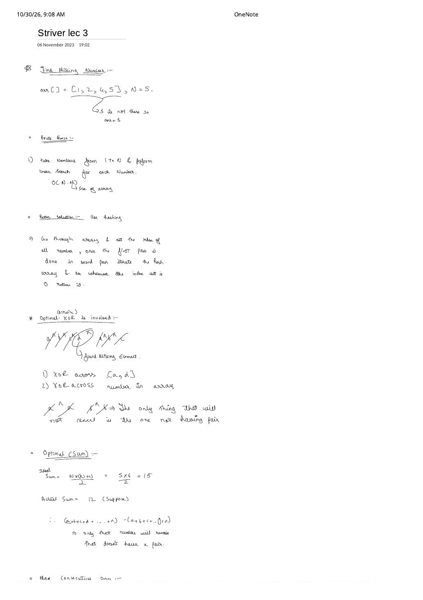
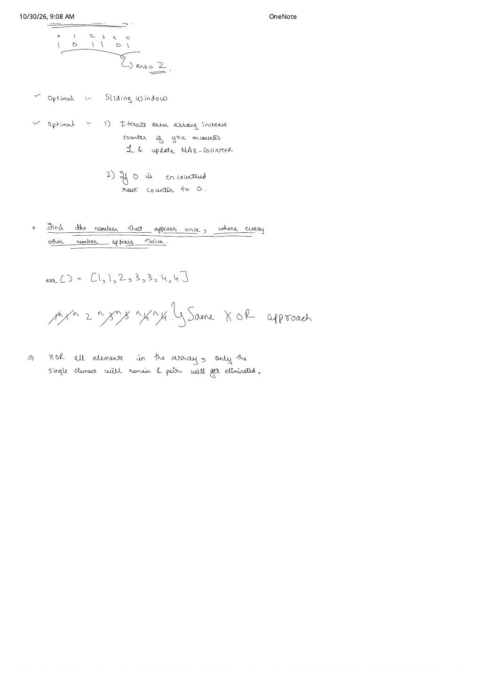

Striver Array Lecture 3: Missing Number, Max Consecutive Ones & Bitwise XOR Cancellation
Expanded from handwritten competitive coding study note: 03_Striver_lec_3.pdf (2 pages) · Jump to original scans
Lecture 3 introduces two crisp $\mathcal{O}(N)$-time, $\mathcal{O}(1)$-space invariants: algebraic / bitwise pair cancellation (used to isolate an unpaired value without allocating a hash table) and streak-reset counting (a degenerate 1-variable sliding window). Together they solve three staple interview problems: Missing Number (LC 268), Max Consecutive Ones (LC 485), and Single Number (LC 136).
1. Find the Missing Number (Striver $1 \dots N$ & LeetCode 268 $0 \dots N$)
In the Striver formulation on Page 1, we are given an integer $N$ and an array of length $M = N - 1$ containing distinct integers from $\{1, 2, \dots, N\}$, e.g. arr = [1, 2, 4, 5] with $N = 5$. Exactly one number is missing (ans = 3). (In LeetCode 268, the array has length $N$ and draws from $\{0, 1, \dots, N\}$ — identical math since $0$ contributes nothing to either a sum or an XOR!)
1.1 Four-Step Progression: Brute $\to$ Hashing $\to$ Gauss Sum $\to$ Bitwise XOR
- Brute Force — Candidate Linear Search ($\mathcal{O}(N \cdot M) = \mathcal{O}(N^2)$ time, $\mathcal{O}(1)$ space):
Outer loop tests each $v \in [1, N]$; inner loop scans all $M = N - 1$ elements of
arrto check whether $v$ is present. If the missing value is $N$, all $N(N - 1)$ comparisons execute. - Better — Presence / Frequency Array ($\mathcal{O}(2N)$ time, $\mathcal{O}(N)$ space):
Allocate
vector<int> seen(N + 1, 0). Pass 1 marksseen[arr[i]] = 1for every element inarr; Pass 2 scans $v = 1 \dots N$ and returns the index whereseen[v] == 0. Fast, but costs $\mathcal{O}(N)$ auxiliary RAM. - Optimal A — Gauss Arithmetic Sum ($\mathcal{O}(N)$ time, $\mathcal{O}(1)$ space):
Subtract the actual array sum from the closed-form ideal sum $1 + 2 + \dots + N$:
$$\text{Ideal Sum} = \frac{N(N + 1)}{2} = \frac{5 \times 6}{2} = 15, \qquad \text{Actual Sum} = 1 + 2 + 4 + 5 = 12 \implies \text{Missing} = 15 - 12 = 3$$
Interview Overflow Nuance: What if $N = 10^5$? Then $N(N + 1)/2 \approx 5 \times 10^9$, which overflows a 32-bit signed
int($\max \approx 2.14 \times 10^9$)! You must widen the accumulator to 64-bitlong long— or eliminate multiplication altogether via XOR. - Optimal B — Bitwise XOR Cancellation ($\mathcal{O}(N)$ time, $\mathcal{O}(1)$ space, Overflow-Free):
Bitwise exclusive-OR ($\oplus$, written
^in C++/Python) forms an abelian group where every integer is its own inverse: $$x \oplus x = 0, \qquad x \oplus 0 = x, \qquad x \oplus y = y \oplus x, \qquad (x \oplus y) \oplus z = x \oplus (y \oplus z)$$ Therefore, if we XOR every expected number in $\{1, 2, \dots, N\}$ against every element ofarr, order does not matter — every present element meets its twin and cancels to $0$, leaving the lonely missing element untouched: $$(1 \oplus 2 \oplus 3 \oplus 4 \oplus 5) \oplus (1 \oplus 2 \oplus 4 \oplus 5) = (1 \oplus 1) \oplus (2 \oplus 2) \oplus 3 \oplus (4 \oplus 4) \oplus (5 \oplus 5) = 0 \oplus 0 \oplus 3 \oplus 0 \oplus 0 = \mathbf{3}$$ Better still, the XOR of values $\le N$ never exceeds $2^{\lfloor \log_2 N \rfloor + 1} - 1 < 2N$, so a 32-bitintcan never overflow!
Single-Loop XOR Trace on arr = [1, 2, 4, 5], $N = 5$
Instead of two separate $\mathcal{O}(N)$ loops (xor1 over $1..N$ and xor2 over arr), fold both into one loop initialized with xr = N = 5:• $i = 0$:
xr ^= (0 + 1) ^ arr[0] $\implies 5 \oplus 1 \oplus 1 = 5$• $i = 1$:
xr ^= (1 + 1) ^ arr[1] $\implies 5 \oplus 2 \oplus 2 = 5$• $i = 2$:
xr ^= (2 + 1) ^ arr[2] $\implies 5 \oplus 3 \oplus 4 = 2$• $i = 3$:
xr ^= (3 + 1) ^ arr[3] $\implies 2 \oplus 4 \oplus 5 = (3 \oplus 4 \oplus 5) \oplus 4 \oplus 5 = \mathbf{3}$.
2. Maximum Consecutive Ones (LeetCode 485)
Given a binary array such as nums = [1, 0, 1, 1, 0, 1] (Page 2 top), return the maximum number of consecutive 1s (ans = 2, from indices $2..3$).
- Sliding-Window / Streak Counter Perspective (Page 2): Think of a window covering the current contiguous block of
1s ending at index $i$. Because we only care about its length, we don't even need an explicit left pointer — a single integercounter = 0tracks the active streak! - Transition Rule:
- If
nums[i] == 1: extend the streak viacounter += 1and updatemaxCounter = max(maxCounter, counter). - If
nums[i] == 0: the streak is broken — resetcounter = 0.
- If
| Index $i$ | nums[i] |
counter |
maxCounter |
|---|---|---|---|
| 0 | 1 | 1 | 1 |
| 1 | 0 | 0 (reset) | 1 |
| 2 | 1 | 1 | 1 |
| 3 | 1 | 2 | 2 |
| 4 | 0 | 0 (reset) | 2 |
| 5 | 1 | 1 | 2 |
3. Single Number — Every Element Appears Twice Except One (LeetCode 136)
Given a non-empty array of integers where every value appears exactly twice except for one element that appears once — e.g. arr = [1, 1, 2, 3, 3, 4, 4] on Page 2 — find the single element (2) in linear time and constant extra space.
- Brute Force ($\mathcal{O}(N^2)$ time, $\mathcal{O}(1)$ space): Count occurrences of each
arr[i]with an inner loop; return the element with count $1$. - Better — Hash Map ($\mathcal{O}(N)$ expected time, $\mathcal{O}(N/2)$ space): Build frequency table
freq[x]++, then return the key withfreq[x] == 1. (Note: an array hash doesn't work directly if values can be negative or up to $10^9$, forcing anunordered_map/map.) - Optimal — Single-Variable XOR Fold ($\mathcal{O}(N)$ time, $\mathcal{O}(1)$ space): Exactly as in Missing Number, XOR all elements of
arrtogether starting fromxr = 0. Because $\oplus$ works bit-by-bit across arbitrary signed or negative two's-complement integers, every twin pair cancels: $$\not{1} \oplus \not{1} \oplus 2 \oplus \not{3} \oplus \not{3} \oplus \not{4} \oplus \not{4} = \mathbf{2}$$
4. Clean Reference Implementations (C++ & Python)
#include <bits/stdc++.h>
using namespace std;
// 1a. Missing Number in [1..N] (Striver formulation, arr.size() == N - 1): O(N) time, O(1) space
int missingNumber1ToN(const vector<int>& arr, int N) {
int xr = N;
for (int i = 0; i < N - 1; ++i) {
xr ^= (i + 1) ^ arr[i];
}
return xr;
}
// 1b. LeetCode 268: Missing Number in [0..n] (nums.size() == n): O(n) time, O(1) space
int missingNumberLC268(const vector<int>& nums) {
int n = (int)nums.size();
int xr = n;
for (int i = 0; i < n; ++i) {
xr ^= i ^ nums[i];
}
return xr;
}
// 2. LeetCode 485: Max Consecutive Ones: O(n) time, O(1) space
int findMaxConsecutiveOnes(const vector<int>& nums) {
int cnt = 0, maxCnt = 0;
for (int x : nums) {
if (x == 1) maxCnt = max(maxCnt, ++cnt);
else cnt = 0;
}
return maxCnt;
}
// 3. LeetCode 136: Single Number: O(n) time, O(1) space
int singleNumber(const vector<int>& nums) {
int xr = 0;
for (int x : nums) xr ^= x;
return xr;
}from functools import reduce
from operator import xor
def missing_number_1_to_n(arr: list[int], n: int) -> int:
xr = n
for i, val in enumerate(arr, start=1):
xr ^= i ^ val
return xr
def find_max_consecutive_ones(nums: list[int]) -> int:
cnt = max_cnt = 0
for x in nums:
if x == 1:
cnt += 1
max_cnt = max(max_cnt, cnt)
else:
cnt = 0
return max_cnt
def single_number(nums: list[int]) -> int:
return reduce(xor, nums, 0)5. Complexity Summary & Key Edge Cases
| Problem | Brute Force | Better (Hashing) | Optimal Time & Space |
|---|---|---|---|
| Missing Number ($1..N$ / LC 268) | $\mathcal{O}(N^2)$, $\mathcal{O}(1)$ | $\mathcal{O}(2N)$ time, $\mathcal{O}(N)$ space | XOR (or 64-bit Sum): $\mathcal{O}(N)$, $\mathcal{O}(1)$ |
| Max Consecutive Ones (LC 485) | Check all windows: $\mathcal{O}(N^2)$ | — | Streak counter: $\mathcal{O}(N)$, $\mathcal{O}(1)$ |
| Single Number (LC 136) | Nested count: $\mathcal{O}(N^2)$, $\mathcal{O}(1)$ | Hash map: $\mathcal{O}(N)$, $\mathcal{O}(N)$ | XOR fold: $\mathcal{O}(N)$, $\mathcal{O}(1)$ |
- Missing boundary value $N$ (e.g.,
[1, 2, 3, 4]for $N = 5$): Initializingxr = Nbefore the $0 \dots N - 2$ loop ensures $N$ itself is included in the expected XOR set! - All-ones or all-zeros binary array: Updating
maxCnt = max(maxCnt, ++cnt)inside thex == 1branch (rather than only whenx == 0!) guarantees we don't miss a streak that runs all the way tonums.back() == 1. - Negative values in Single Number (e.g.,
[-7, 3, -7]): Two's-complement bit patterns still satisfy $(-7) \oplus (-7) = 0$, so XOR handles negatives with zero extra branches.
From the Handwritten Notes
View original handwritten page — Page 1: Missing Number (Brute Force, Hashing, Bitwise XOR & Gauss Sum)


03_Striver_lec_3.pdf p. 1: Four derivations for Missing Number on [1, 2, 4, 5] ($N = 5$), showing $\mathcal{O}(N \cdot M)$ search, two-pass hash array, XOR pair cancellation, and Gauss sum $5 \times 6 / 2 - 12 = 3$.View original handwritten page — Page 2: Max Consecutive Ones & Single Number via XOR


03_Striver_lec_3.pdf p. 2: Running streak counter on [1, 0, 1, 1, 0, 1] and XOR pair elimination on [1, 1, 2, 3, 3, 4, 4].